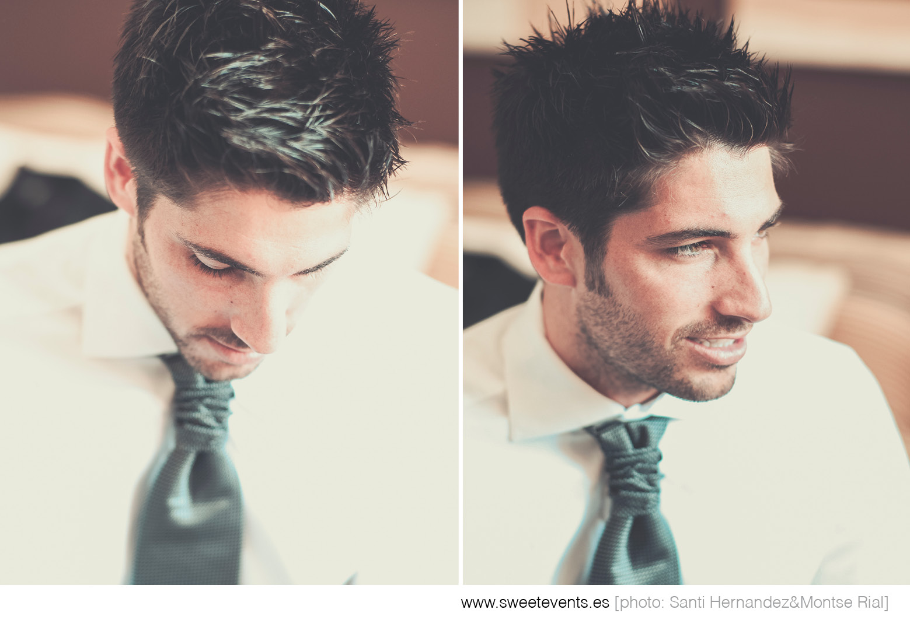
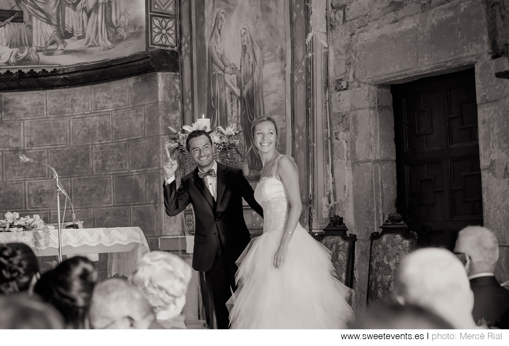
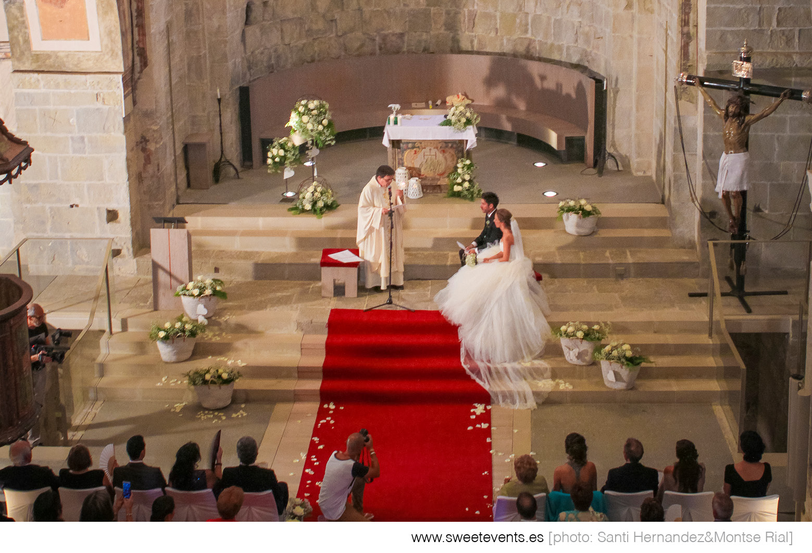
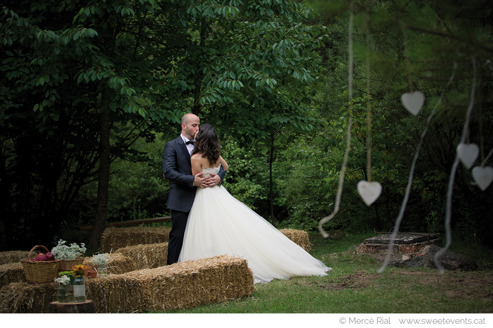
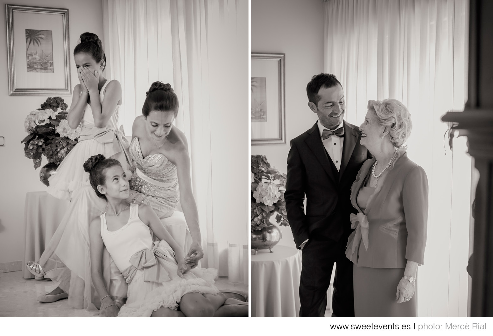
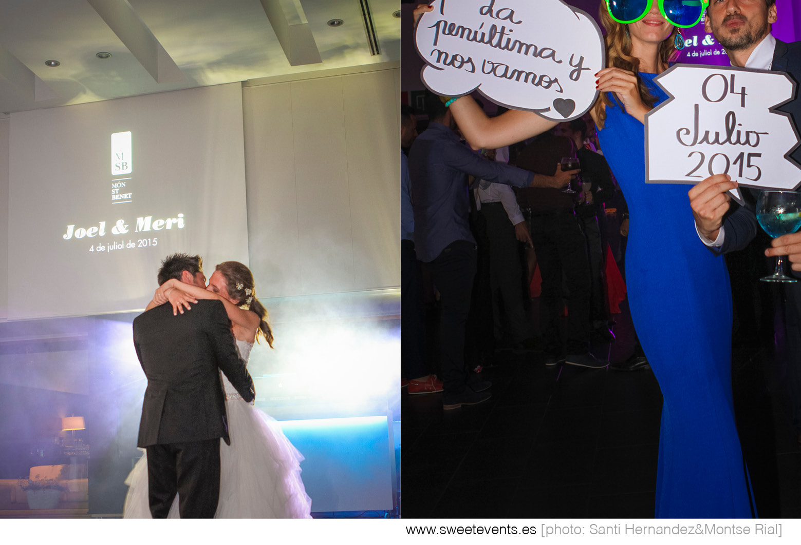
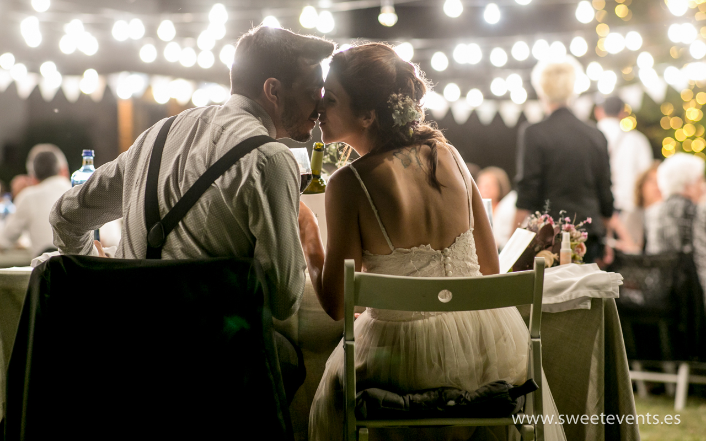
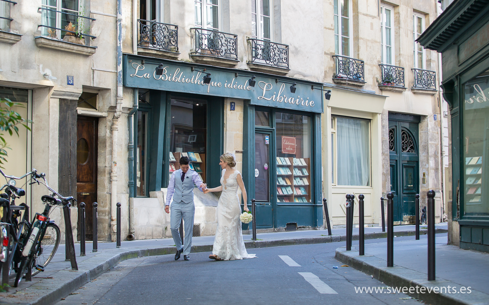
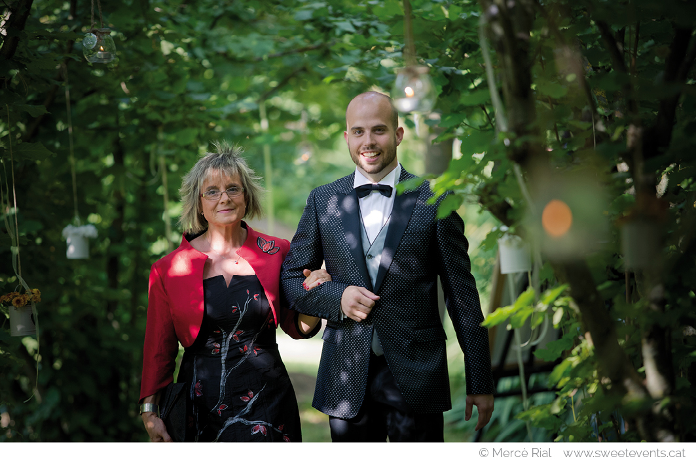

Reportajes
Bodas que hemos vivido










Nada de poses imposibles: documentamos vuestra boda tal y como se vivió. Luz bonita, gestos reales y las lágrimas de la abuela.
📅 Las fechas de mayo–octubre vuelan · respuesta en el díaPor qué Sweet Events
Desde 1996 hemos contado más de 500 historias. Somos cuatro profesionales de foto y vídeo: siempre habrá dos ojos donde pase algo importante.
Reportajes






Cómo trabajamos
Un café en Manresa o Vilanova (o videollamada). Nos contáis cómo sois y qué imagináis; os enseñamos bodas reales completas, no solo las 10 mejores fotos.
Llegamos antes que los nervios. Trabajamos en silencio, sin dirigir ni interrumpir: la boda la vivís vosotros, nosotros la contamos.
Avance en días, reportaje completo en semanas y álbum artesanal que pasará de mano en mano durante décadas.
“Ver el reportaje fue volver a casarnos. Salían momentos que ni sabíamos que habían pasado.”Guillem & Anna · boda en el Bages
Dudas frecuentes
Depende de la cobertura: horas, segundo fotógrafo, álbum, vídeo… Hacemos presupuesto cerrado y sin sorpresas. Cuéntanos fecha y lugar por WhatsApp y te lo enviamos en el día.
Sí. Cubrimos toda Cataluña desde Manresa y Vilanova i la Geltrú, y también destinos internacionales: hemos fotografiado bodas y postbodas en París o Roma.
Un avance en pocos días para que podáis compartirlo, y el reportaje completo editado en unas semanas, en galería digital privada.
Sí: vídeo cinematográfico, dron y same day edit con equipo propio, perfectamente coordinado con los fotógrafos. Mira el servicio de vídeo.
Llevamos más de 25 años de bodas: tenemos plan B (y C) de luz e interiores. Algunas de nuestras mejores fotos son de días de lluvia.
Reserva tu fecha
Así garantizamos dedicación total. Si ya tenéis fecha, no la dejéis escapar: consultad disponibilidad ahora mismo.